Ardens XI
Propuesta de landing para una tienda de camisas de fútbol en Antiguo Cuscatlán: intro con fuego animado, clubes por liga y selecciones con bandera, una vitrina que se pinta del color del equipo con los cánticos de la afición y un pedido que se arma solo para mandarlo por Instagram.
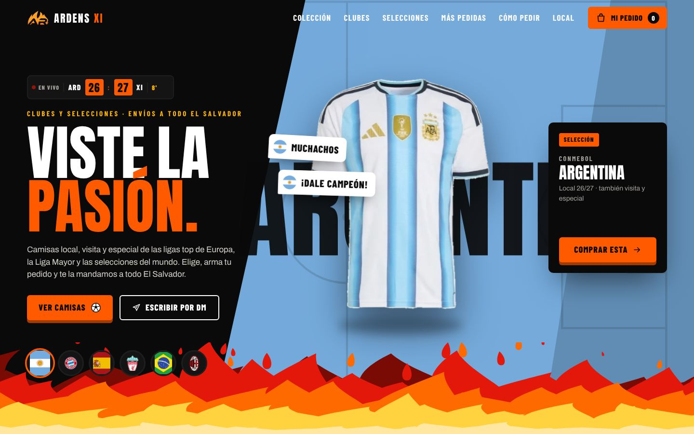
★ Objetivo
El reto
Ardens XI vende por mensaje directo en Instagram, así que cada pedido empieza con preguntas: qué equipo, qué camisa, qué talla. La propuesta tenía que contagiar la emoción de ponerse la camisa y, al mismo tiempo, dejar el pedido listo antes de escribir.
★ Proceso
Cómo lo resolví
Diseñé una página con energía de estadio: fuego de caricatura en la intro y las transiciones, un marcador en vivo y un catálogo ordenado como lo busca un aficionado, por liga o por confederación. Al abrir una camisa, la pantalla toma el color del equipo y salen sus cánticos. La bolsa junta las camisas con talla, versión y nombre, y copia el pedido listo para pegarlo en el DM de la tienda.
★ Funciones
Lo que hace el sitio
Intro con fuego
Fuego animado estilo caricatura que sube, explota y abre la página; el mismo fuego hace las transiciones del menú.
Clubes por liga
Premier League, LaLiga, Serie A, Bundesliga, Ligue 1 y la Liga Mayor de El Salvador, cada club con su escudo.
Selecciones con bandera
Selecciones agrupadas por confederación: Concacaf, Conmebol, UEFA, CAF, AFC y OFC.
Local, visita y especial
Cada equipo tiene sus tres camisas y se cambian con un toque en la tarjeta.
Vitrina del equipo
La camisa se abre en una ventana con el color del equipo y los cánticos de su afición; en celular sube como una hoja desde abajo.
Talla, versión y nombre
Se elige talla con guía de medidas, versión Fan o Jugador, cantidad y nombre y número en la espalda.
Pedido por Instagram
La bolsa arma el pedido completo con entrega o retiro en el local y lo copia para pegarlo en el DM.
Colección en cajas 3D
Una pila de cajas con los equipos que gira con el scroll y abre la camisa al tocarla.
Más pedidas en un perchero
Un perchero circular que se gira para ver las camisas favoritas.
★ Galería
Capturas de la propuesta
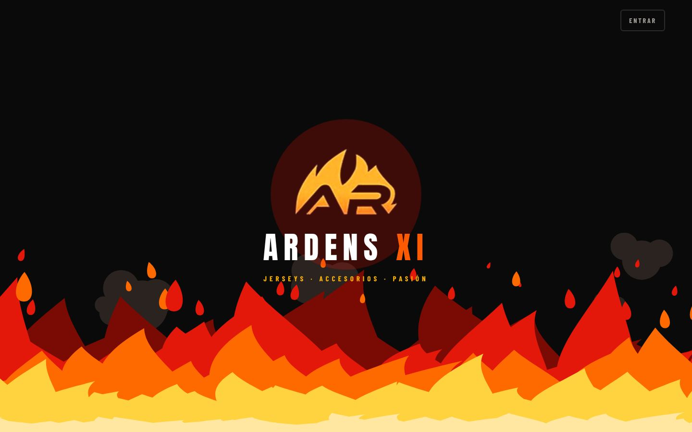
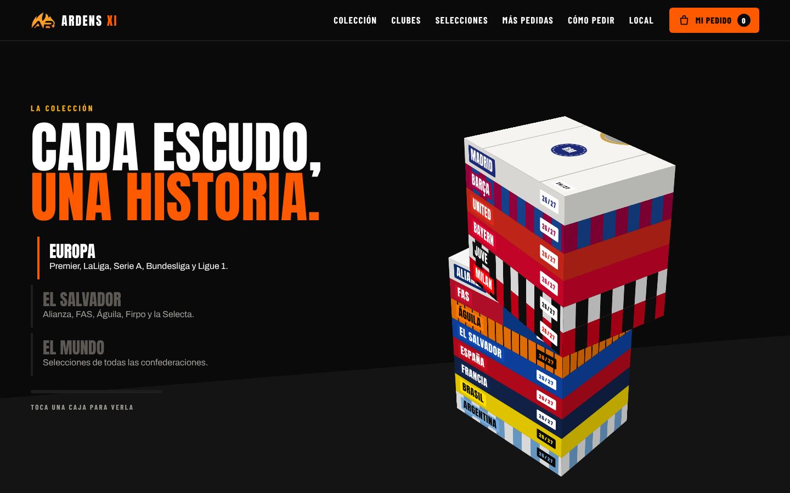
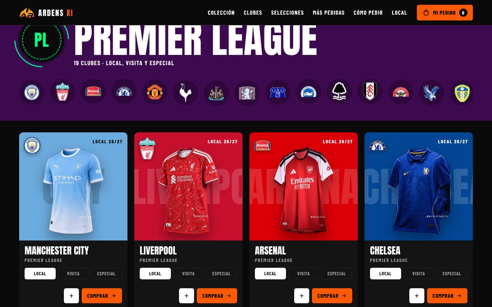
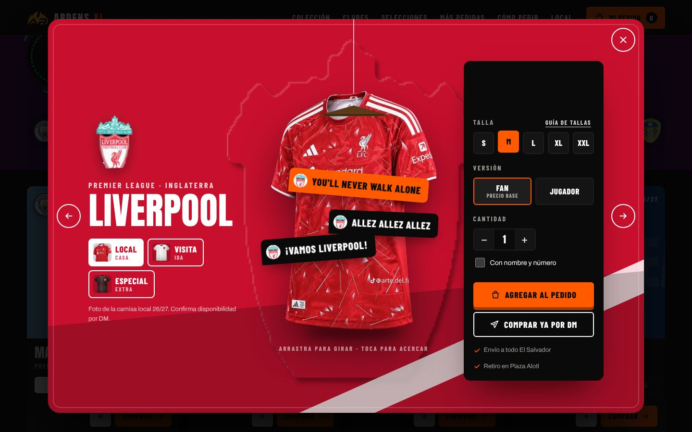
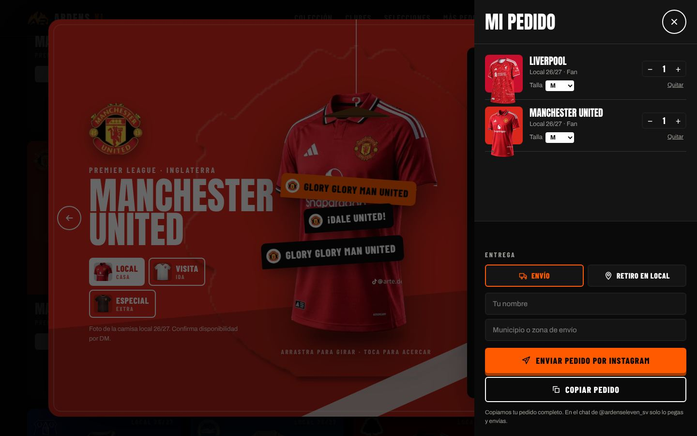
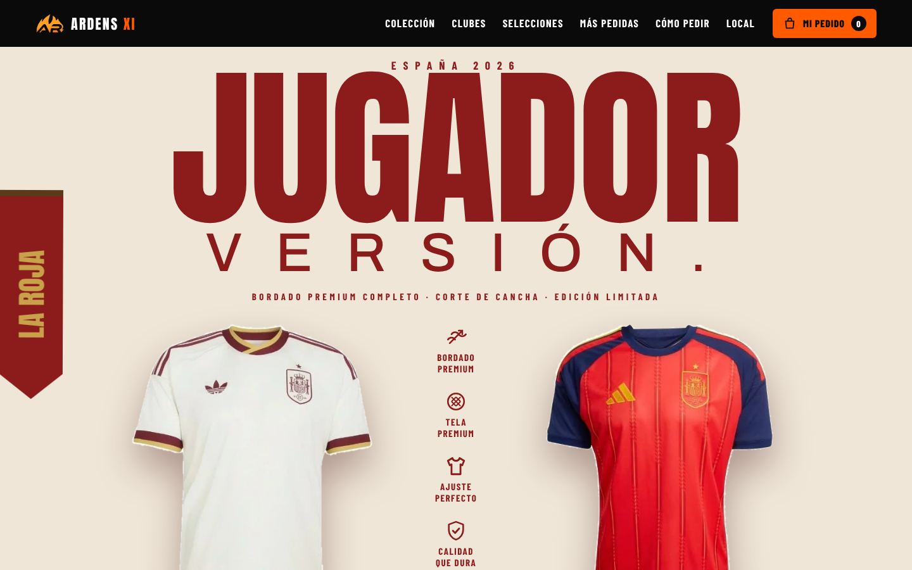
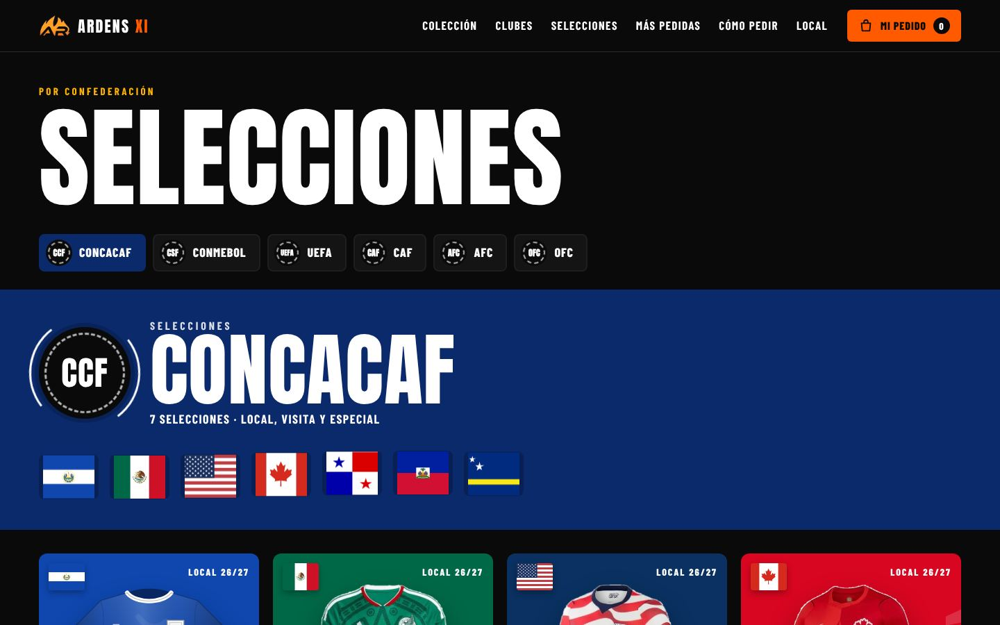
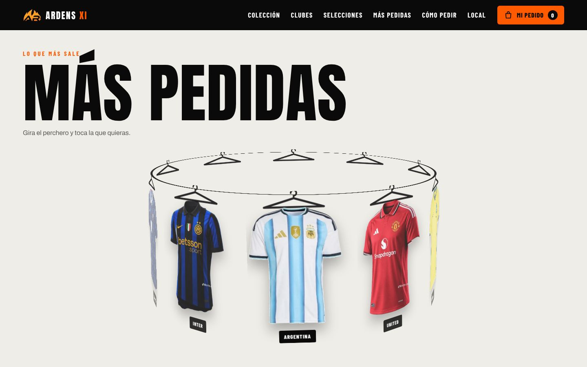
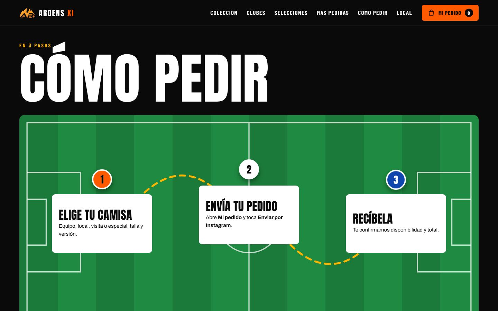
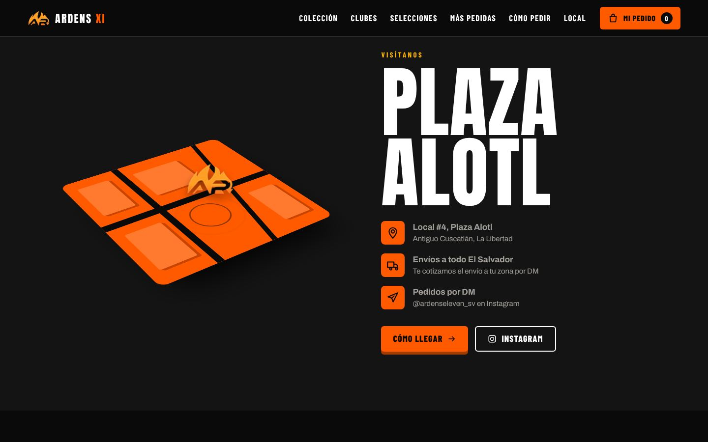
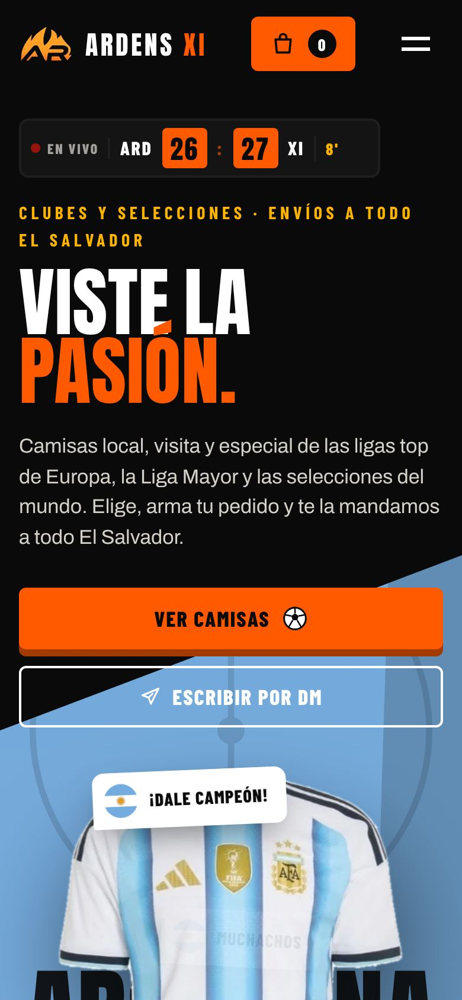